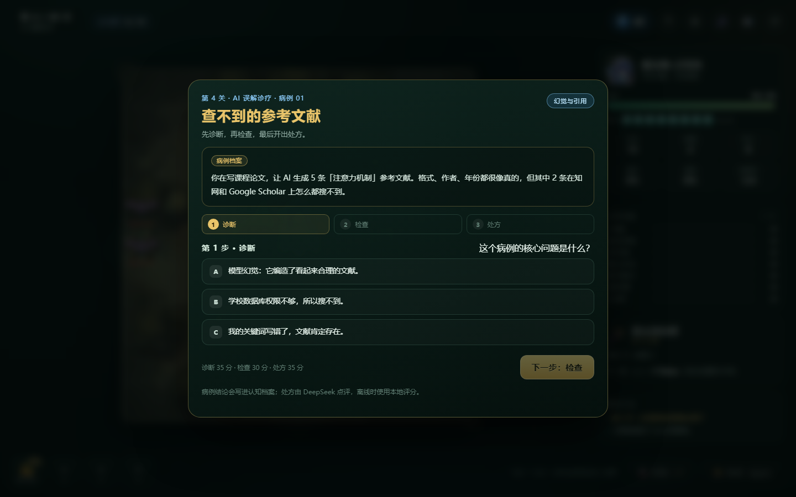
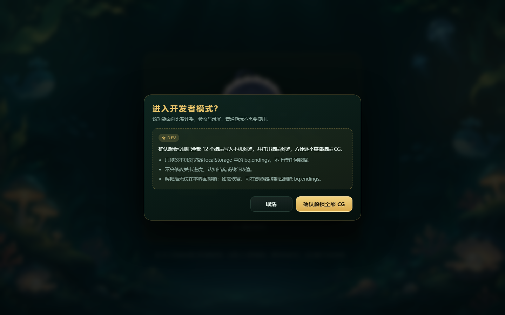

| 作品名称 | 大肥鱼历险记 · DeepSeek 认知冒险 | 作品类型 | 单机回合制棋盘 + AI 素养科普游戏 |
|---|---|---|---|
| 技术形态 | 纯前端（HTML / CSS / 原生 JavaScript）+ 零依赖 Node 代理 | 运行方式 | 双击 index.html 离线运行；npm start 接入 DeepSeek |
| 文档版本 | v1.0（比赛提交版） | 代码版本 | package.json v1.0.0 |
| 文档范围 | 意图控制策略 · 架构设计 · 可复现性论证 | 页数上限 | 27 页（含封面） |
《大肥鱼历险记》把「大学生如何正确使用 AI」拆成 40 关可玩的认知冒险：玩家扮演 DeepSeek 化身的蓝色小鲸鱼，在 AI 认知森林里击败九类「误解怪物」，处理十个 AI 使用病例，最终在十二种结局中走向属于自己的答案。项目刻意选择零依赖、无构建、双击即玩的形态，把比赛现场的环境风险压到最低；同时用分层架构、事件协议与种子随机，把「AI 生成的代码」约束成可测试、可复现、可解释的工程系统。本文重点回答三个问题：我如何用上下文与 Prompt 控制 AI 的意图；AI 生成的代码采用了什么架构、我如何约束它；以及为什么这份作品可以被另一台干净电脑在十分钟内复现。
先读第 1 章与第 7 章，按「60 秒验收脚本」打开游戏；再读第 3、4、5 章核对工程能力。
直接看第 2 章与附录 A；完整命令、环境变量、故障排查见独立文档《10 分钟极速复现指南》。
第 3、6 章给出 Prompt 结构、三次迭代的完整链路；完整 Prompt 原文见《AI 交互 Prompt 链》。
这不是一款「把 AI 名词贴到怪物身上」的换皮游戏。它把 AI 素养教育里最难讲清楚的三件事——幻觉、验证、依赖——做成了玩家必须亲自做出的选择，并让选择产生可见的后果。
游戏的主角是一条蓝色小鲸鱼——DeepSeek 的化身。它掉进「AI 认知森林」，这里的怪物不是恶魔，而是人们对 AI 的误解：没说清楚的提示词、训练数据里的噪声、只会背答案的过拟合、一本正经编造事实的幻觉、过期缓存、隐私泄露、堆算力、提示词注入、以及被 Token 喂养的饭团。玩家要做的不是「杀光」，而是在战斗、病例诊疗与对话中逐步建立对 AI 的正确理解。
因此，作品的设计目标被刻意写成三条可检验的原则：
| 设计原则 | 游戏中的实现 | 为什么这样做 |
|---|---|---|
| 认知冲突 | 九类怪物对应九种真实误解；Boss 是「背题」「幻觉」「信息过载」「算力与 Token」。 | 先让玩家感到「这说的就是我」，再谈知识。 |
| 决策后果 | 10 个三步病例、3 场 Boss 对话 + 1 场终局对话、9 个终局选项，共同写入七维认知档案。 | 素养不是选择题分数，而是反复决策后的倾向。 |
| 可解释反馈 | 病例反馈给出诊断/检查/处方三段得分；结局页展示七维雷达与平均分。 | 让玩家知道「为什么是这个结局」，而不是抽奖。 |
一局标准流程是 40 个回合：每回合开始刷新怪物、回满体力、重置技能冷却；玩家每次只能移动一格，移动与普通攻击各消耗 1 点体力，主动技能不消耗体力；玩家每次行动后，怪物沿 BFS 最短路逼近，每两次反应攻击一次；清空当前回合全部怪物后自动进入结算，玩家可以升级武器、逛商店、领取每 5 关的技能奖励，然后进入下一关。第 4、8、12……40 关插入 AI 误解病例；第 10、20、30 关是 Boss，击败后可对话；第 40 关击败终焉电饭煲、拾取传送符文后进入终局对话，由「最终选择 + 七维档案」判定 12 种结局之一。

| 交付物 | 内容 | 验收方式 |
|---|---|---|
| 可运行游戏 | index.html + 24 个 JS 模块 + 65 个素材文件，双击即玩 | 第 2 章三条路径；第 7 章 60 秒脚本 |
| 10 分钟复现指南 | 依赖清单、环境变量模板、时间盒、故障排查 | 另一台干净电脑按文档执行 |
| Prompt 链 | 三次核心迭代的完整提示、AI 建议、Bug 诊断与修复 | 第 6 章摘要；独立文档全文 |
| 技术文档 | 意图控制、架构、可复现性（本文） | 页数 ≤ 30；论证可核对 |
| 开发者模式 | 标题页按钮 + 二次确认 + 一键解锁 12 结局 CG | 第 7 章；E2E 已验证取消不写入 |
文中所有「已通过」「已覆盖」均对应仓库中的可执行命令：npm test（119 个测试）、npm run sim（200 局种子模拟）、npm run screens（25 张截图 + 6 组 E2E + 运行时错误捕获）。不把「设计意图」写成「已验证结果」；未验证的部分会在第 8 章明确标出。
| 比赛要求 | 本项目的回应 | 对应位置 |
|---|---|---|
| 用于比赛现场 | 零依赖、双击即玩；离线也能完整通关与解锁 12 结局 | 第 2 章 / 第 7 章 |
| 10 分钟极速复现 | 依赖清单、环境变量模板、时间盒、故障排查 | 第 2 章 + 独立复现指南 |
| ≥3 条完整 Prompt 链 | 40 关体力追击、病例与 12 结局、精灵动画管线 | 第 6 章 + 独立 Prompt 文档 |
| 提供有效 Prompt | 需求冻结、架构守门、根因诊断、最小修复、验收证据、复现文档 | Prompt 文档第 4 节 |
| 技术文档 ≤ 30 页 | 意图控制、架构设计、可复现性三章为重点；全文 27 页（含封面） | 本文 |
| 开发者模式 | 标题页按钮 + 二次确认 + 一键解锁 12 结局 CG | 第 7 章 |
复现的敌人不是代码，而是环境。这个项目用「零运行时依赖 + 无构建 + 素材随包」把环境熵压到最低：评委机器只需要一个浏览器；要跑自动化再加 Node 18+；Python 与 ffmpeg 只在重建美术素材时才需要。
| 层级 | 依赖 | 用途与不装的后果 |
|---|---|---|
| 必需 | Chrome / Edge（较新版本） | 运行游戏。支持 ES2020、CSS Grid、WebP、WebAudio、H.264。旧浏览器可能无法播放结局成片。 |
| 可选 | Node.js 18+ / npm | 本地静态服务器 + DeepSeek 代理、单元测试、平衡模拟、截图 E2E。不装只能双击玩离线模式。 |
| 可选 | Chrome / Edge | npm run screens 的真实视口截图与 E2E；不影响游戏本身。 |
| 仅重建素材 | Python 3.10+、Pillow、numpy、ffmpeg | 从原始立绘/视频重新生成图集与成片。普通复现完全不需要。 |
项目没有 dependencies / devDependencies，因此不存在 node_modules，也不需要 npm install。本地代理只使用 Node 内置模块；测试只使用 node:test 与 node:assert。
| 路径 | 命令 | 适用场景与边界 |
|---|---|---|
| A 离线 | 双击 index.html | 最稳、最快。12 结局全部可解锁，病例使用本地评分。无网络依赖。 |
| B 代理 | Copy-Item .env.example .envnpm start | 推荐。Key 只留在服务器进程环境；游戏内选「本地代理」，地址 /api/chat。 |
| C 直连 | 游戏内「API 设置」→ 直连 | 仅调试。Key 存 localStorage，可能被 CORS 拦截；失败自动回退本地评分。 |
直连把 Key 暴露在 localStorage（键名 bq.ai.settings），且浏览器跨域策略不可控；本地代理把 Key 留在 Node 进程，浏览器只访问同源 /api/chat，同时统一了 30 秒超时、错误消息与 CORS 头。代理无 Key 时返回 503，游戏会自动回退，不会中断关卡。
仓库根目录提供 .env.example；复制为 .env 后填写即可。服务启动时自动读取，已存在的进程环境变量优先于 .env。
| 变量 | 必填 | 默认 | 敏感 | 说明 |
|---|---|---|---|---|
DEEPSEEK_API_KEY | 仅代理 | 空 | 是 | 只在服务器进程或本机 .env；不进入浏览器 |
DEEPSEEK_MODEL | 否 | deepseek-chat | 否 | 游戏内设置可覆盖 |
DEEPSEEK_BASE_URL | 否 | api.deepseek.com | 否 | 代理拼接 /chat/completions |
PORT | 否 | 8123 | 否 | 被占用时修改 |
三种注入方式：PowerShell 当前窗口 $env:DEEPSEEK_API_KEY="sk-..."；CMD set DEEPSEEK_API_KEY=...；或 .env 文件（推荐，重启仍有效，已加入 .gitignore）。
| 时间 | 动作 | 通过标准 |
|---|---|---|
| 0:00–1:00 | 解压，确认 index.html、js/、assets/、tools/ 完整 | 65 个素材文件、约 58 MB |
| 1:00–2:00 | 双击 index.html，看标题页 | 图鉴 0/12、AI 状态、开发者模式按钮 |
| 2:00–4:00 | 开始 → 选职业 → 移动/攻击/休息 → 清怪结算 | 体力、追击、自动结算正常 |
| 4:00–5:00 | 开发者模式 → 确认 → 图鉴 12/12 → 点开 CG | 二次确认；取消不写入；可重播 |
| 5:00–7:00 | .env + npm start + /api/health + 游戏内测试 | hasKey:true，标题页显示「本地代理」 |
| 7:00–8:00 | 第 4 关病例，提交处方 | AI 点评或本地评分兜底，不卡关 |
| 8:00–10:00 | 记录版本、端口、截图、异常 | 形成一页复现记录 |
| 命令 | 预期 | 说明 |
|---|---|---|
npm test | 119 pass / 0 fail | 单元 + 集成；约 1 秒 |
npm run sim | 战士 23.5% / 法师 18.5% | 200 局、seed 1 起；几秒 |
npm run screens | 25 张截图 + 6 组 E2E / 0 运行时错误 | 需要 Chrome/Edge；约 3–5 分钟 |
GET /api/health | { ok:true, hasKey:… } | 代理存活与 Key 状态 |
不要在 file:// 下测 API——没有同源后端，/api/chat 必然 404；不要 npm install——没有依赖，装了也不会改变行为；不要把真实 Key 写进截图或文档——录屏前确认标题页只显示模式，不显示 Key。
完整的逐项命令、故障排查表、复现记录模板见独立文档 《10 分钟极速复现指南》；本文只保留论证所需的最小信息。
AI 代码生成的核心风险不是「写不出来」，而是「写偏了还看起来很对」。意图控制的目标，是把「我想要什么」从一段自然语言，变成一组 AI 无法绕开的约束与可执行的验收证据。
| 漂移类型 | 典型表现 | 本项目中的真实例子 |
|---|---|---|
| 范围漂移 | 让它修移动，它顺手重写战斗、加新玩法、改数值。 | 重构 40 关时，AI 提出「击杀后补刷怪物」——直接破坏「清空怪物自动结算」的目标。 |
| 架构漂移 | 引入框架、ES Module、后端、数据库、第三方库。 | AI 第一版方案要拆 ES Module、引入 pathfinding 库；与「双击即玩、零依赖」冲突。 |
| 验收漂移 | 说「已完成」，但没有测试、没有截图，旧功能回归。 | 单元测试全绿，但标题页 API/图鉴按钮失效、正常开局不刷怪——测试没覆盖 UI 编排。 |
三种漂移的共同根源是：AI 只看到了「局部目标」，没有看到「项目宪法」与「验收代价」。因此我没有试图用更长的自然语言去「说服」它，而是把意图拆成四层上下文与五道闸门。
每道闸门都有「拒绝权」：目标不清楚就退回重写目标；约束被违反就退回方案；复述不一致就不允许编码；实施超范围就回滚；证据不足就不接受「完成」。这套回路看起来比「一句话让 AI 写完」慢，但它把返工从「写完再发现」提前到「写前就暴露」。
每次核心迭代，我都会要求 AI 先用自己的话复述约束、列出改动文件与风险点，并明确「等我确认后再写代码」。这一步成本很低，却能抓出大部分理解偏差——尤其是「删除」被理解成「改名」、「只改 core」被理解成「顺便重写 UI」。
把所有代码一次性塞给模型，既贵又容易让它「看到什么改什么」。我把上下文分成四层，按任务按需加载：
| 层级 | 内容 | 规模 | 加载时机 |
|---|---|---|---|
| L0 项目宪法 | 零依赖、双击即玩、UMD、core 无 DOM、中文、40 关、12 结局、离线可通关 | 300–500 字 | 每次会话必带；放在 Prompt 最前 |
| L1 领域模型 | state 字段、phase 状态机、{ok, events} 协议、七维 axes、结局判定表 | 1–2 页 | 涉及玩法/结局/病例时必带 |
| L2 任务卡 | 本次目标、非目标、允许改的文件、验收命令 | 500–800 字 | 每次任务一张，任务结束即废弃 |
| L3 代码证据 | 相关文件的真实片段、测试输出、截图、行号 | 100–300 行 | 只给要改的函数与调用方，不给整仓库 |
这四层对应一个简单原则：上下文不是越多越好，而是越「相关且不可否认」越好。L0 与 L1 是稳定事实，L2 是本次意图，L3 是证据。AI 可以质疑 L2 的实现方式，但不能修改 L0/L1 的事实；如果它认为 L0 需要变，必须先说明理由并等待确认。
我最终稳定下来的模板是七段。它不是「咒语」，而是把工程沟通中容易遗漏的部分固定下来：
其中「非目标」和「停止条件」是最容易被忽略、却最能限制漂移的两段。前者告诉 AI 边界在哪里，后者告诉 AI 什么时候必须停下来，而不是「先做了再说」。
抽象原则对模型约束力弱，具体的不变量才有约束力。以下 10 条在本项目里被反复引用，也直接对应代码与测试：
| # | 不变量 | 落地方式 |
|---|---|---|
| 1 | 运行时零依赖、无构建 | package.json 无依赖；script 标签顺序固定；file:// 可运行 |
| 2 | core 层不出现 DOM / window | 除 ai.js 的 localStorage 适配外，core 可在 Node 直接 require |
| 3 | UI 不直接修改 state | 所有变更经 Progression；UI 只读 state 与消费 events |
| 4 | 动作统一返回 {ok, reason, events} | main 只按 ok/reason/events 分支，不在 UI 复制规则 |
| 5 | 数值只在 config.js | 关卡、怪物、武器、技能、商店、AI 默认值集中 |
| 6 | 内容与逻辑分离 | 10 个病例在 questions.js；12 结局在 endings.js |
| 7 | 玩法随机只走 state.rng | mulberry32 + 种子；UI 装饰随机不进入状态 |
| 8 | 离线必须完整可通关 | AI 失败回退本地评分；12 结局不依赖 API |
| 9 | 稳定标识 | 按钮 id、localStorage key、URL 参数一旦发布不随意改名 |
| 10 | 每次改动必须可回归 | 新增行为有测试；旧行为有 E2E 或截图 |
AI 的行为：加新怪物、加抽卡、加每日任务、改数值——每一项都「更丰富」，但会破坏 40 关节奏、增加未测试内容，并让比赛现场不可控。改法：把「更好玩」换成可观察目标，例如「第 1 关 2 只怪、第 33 关 6 只怪、清空后自动结算、体力不足时休息 +3」。
AI 的行为：推荐 React + Vite + TypeScript + Zustand，理由是「可维护」。这在普通项目里可能是对的，但会让「双击 index.html」失效，并引入构建与依赖风险。改法：把架构写成硬约束与权衡：「零依赖、无构建、UMD、core 可 Node 测试；如果必须引入工具，先说明它解决什么、代价是什么、如何保持 file:// 可运行，再等我确认」。
AI 的行为：直接重写 main.js 与 progression.js，顺手改 HUD，结果旧按钮又坏了。改法：先禁止改代码，要求列根因假设与验证方法；确认根因后再给文件白名单与最小修复；最后要求全量回归与 E2E 证据。
如果一条 Prompt 无法回答「做完后我用什么命令、看哪个页面、看到什么现象来判定成功」，那它还不是工程任务，只是愿望。先把愿望翻译成验收，再交给 AI。
在 AI 复述之后、编码之前，我会做一次 30 秒对齐检查：它列出的文件是否在允许范围内？是否遗漏了「非目标」？是否把「删除」写成了「保留但隐藏」？是否计划新增依赖或修改数据结构？只要有一项不对，就退回重写，而不是「先让它写写看」。
停止条件同样重要。我明确要求 AI 在以下情况停下来询问，而不是自行决定：需要新增运行时依赖；需要改 state 字段或事件协议；需要删除/跳过测试；需要改按钮 id、localStorage key 或 URL 参数；改动文件超过白名单；无法复现我给的 Bug。这条规则避免了「AI 为了交差而改测试」这类最危险的行为。
| 观察项 | 结果 |
|---|---|
| 运行时依赖 | 0；无 node_modules、无构建步骤 |
| 三次核心迭代 | 40 关体力追击、病例与 12 结局、精灵动画管线 |
| 用户可见回归 | 3 个（API 设置、结局图鉴、正常开局不刷怪），均已修复并纳入 E2E |
| 测试规模 | 119 个测试，覆盖 core 规则、素材清单、结局可达性、集成流程 |
| 视觉验收 | 25 张真实视口截图；6 组 E2E；运行时错误 0 |
这些数字不能证明「Prompt 一定有效」，但能证明这套控制回路产出了一个可运行、可测试、可复现的系统，而不是一堆看起来合理的代码。
这套架构不是「AI 自由发挥」的结果，而是被约束出来的：先定边界，再让 AI 在边界内实现。它的核心只有一句话——规则在 core，表现 在 ui，编排在 main，适配在边界。
| 层 | 规模 | 核心模块与职责 |
|---|---|---|
| 外壳 | 1 HTML + 1 CSS | 固定脚本顺序；主题、棋盘、HUD、弹窗、CG、响应式全部在 style.css |
| 规则 core | 12 文件 / 约 3,700 行 | config 数值与文案、rng 种子随机、grid BFS/视线、stats 派生属性、combat 伤害、skills 冷却、questions 病例与评分、endings 结局、shop 商店、state 建局、monsters 生成/追击/Boss、progression 回合与流程 |
| 编排 main | 1 文件 / 约 1,135 行 | 界面状态机、动作分发、奖励/病例/对话流程、dev 直达参数、页面内自检 |
| 表现 ui | 10 文件 / 约 3,900 行 | 棋盘与实体渲染、HUD、病例/商店/API 弹窗、结局 CG、Boss 演出、精灵图、音效/BGM、输入 |
| 适配 | 1 代理 + 1 AI | 本地静态服务 + DeepSeek 代理；浏览器端离线/代理/直连三种模式与 JSON 契约 |
除 ai.js 需要读写 localStorage 外，core 的 12 个模块都能在 Node 里直接 require，不依赖浏览器。这带来两个直接收益：测试不需要 jsdom；平衡模拟可以无头跑 200 局。任何把 document.querySelector 写进 core 的改动都会被拒绝。
UI 只做三件事：读 state 渲染、把用户输入转成动作调用、消费 core 返回的 events 做动画/音效/提示。它不计算伤害、不决定怪物行动、不直接改 player.hp。这条边界让「表现 bug」与「规则 bug」可以分开定位。
{ok, reason, events}成功时 events 是表现层的唯一输入；失败时 reason 是给玩家看的中文原因。main 只按 ok / reason / events 分支，不复制规则。这样同一套规则既能被 UI 调用，也能被模拟器调用。
关键点是「先算完，再演」：core 在一次调用里把玩家移动、怪物反应、死亡、回合结束全部算完，返回完整事件列表；UI 再按顺序播放。这样不会出现「动画播到一半状态又变了」的竞态，也让同一次动作可以在模拟器里同步执行、在浏览器里异步演出。
| phase | 含义 | 出口 |
|---|---|---|
battle | 战斗回合；可移动/攻击/技能/休息 | 全灭 → reward；死亡 → over；第 40 关 Boss 死亡 → rune |
question | 病例诊疗；阻塞其他行动 | 提交 → 回 battle |
reward | 回合结算、商店、技能/Boss 奖励 | 下一关 → battle |
rune | 终局拾取符文；可自由移动 | 踩到符文 → dialogue |
dialogue | 终局对话 | 选择 → ending |
over / ending | 失败 / 结局结算 | 重开或回标题 |
事件是 core 与 UI 之间唯一的表现协议。当前使用的事件包括 stage-start、spawn、boss-intro、player-move、monster-move、monster-hit、player-hit、player-stun、stun-skip、monster-death、reward-open、rune-drop、rune-pickup、case-open、case-answered、defeat。新增表现时优先新增事件，而不是让 UI 去猜 state 的变化。
config.js 是唯一的数值与文案源：40 关、Boss 关、体力、怪物成长、武器、23 个技能、商店、AI 默认值。病例内容在 questions.js（10 个病例，每个含诊断/检查/处方/关键词/解释），结局在 endings.js（12 个结局 + 12 组 CG 素材）。这三层分离让「调数值」「换文案」「加病例」不需要碰规则代码，也让测试可以针对内容做清单校验。
| 决策 | 选择 | 代价与收益 |
|---|---|---|
| ADR-01 | 零依赖、无构建、file:// 可运行 | 放弃热更新与模块化开发体验；换来比赛现场零安装、零构建失败 |
| ADR-02 | UMD 包装 + 固定 script 顺序 | 需要手工维护加载顺序；换来同一份文件既能浏览器运行又能 Node 测试 |
| ADR-03 | core / ui / main 分层 | 多一层编排代码；换来规则可测试、表现可替换 |
| ADR-04 | 事件驱动表现 | 事件列表需要维护；换来无竞态、可回放、可无头模拟 |
| ADR-05 | 种子随机（mulberry32） | 需要把随机流注入 state；换来同种子可复现、可回归 |
| ADR-06 | 离线优先、AI 可插拔 | 需要维护本地评分；换来断网可通关、API 失败不阻塞 |
每次 AI 提交后，我按同一张清单过一遍。它既是代码审查，也是对 Prompt 效果的检查：
| # | 检查项 | 不通过时怎么办 |
|---|---|---|
| 1 | 是否新增了运行时依赖 / 构建步骤？ | 拒绝，要求零依赖实现 |
| 2 | core 是否出现 DOM / window？ | 移回 UI；core 保持可 Node 测试 |
| 3 | UI 是否直接改 state？ | 改为调用 Progression |
| 4 | 动作是否返回 ok/reason/events？ | 补契约，main 不复制规则 |
| 5 | 随机是否走 state.rng？ | 替换 Math.random；补种子测试 |
| 6 | 数值是否写死在逻辑里？ | 移入 config.js |
| 7 | 是否删除/跳过了测试？ | 拒绝，要求补回并解释 |
| 8 | 旧按钮 id / 存档 key / URL 参数是否被改？ | 保持兼容或提供迁移 |
| 9 | API 失败是否有回退？ | 补 try/catch 与本地评分 |
| 10 | 是否覆盖移动端 390×844？ | 补响应式与真实视口截图 |
| 11 | 事件是否完整、顺序是否确定？ | 补事件与 E2E 断言 |
| 12 | 是否有「看起来完成」但无证据的声明？ | 要求贴命令输出与截图 |
这是一个刻意的权衡，不是「不会用」。React + Vite 能带来组件化与热更新，但也会带来依赖安装、构建产物、版本漂移与 file:// 失效；而本项目的比赛场景要求「评委拿到压缩包，双击就能玩」。零依赖架构牺牲了开发体验，换来了最低的现场风险与最高的可复现性。为了让牺牲可控，我用 UMD 让模块仍可测试、用事件协议让 UI 仍可替换、用配置分离让内容仍可扩展——如果未来要迁移到框架，规则层可以原样复用。
「可复现」不是一句口号，而是一组可以被别人检查的事实：同一份代码、同一份素材、同一个种子，在另一台干净电脑上得到同样的可观察行为与同样的自动化结果。
| 维度 | 问题 | 本项目的答案 |
|---|---|---|
| 环境 | 需要装什么？版本冲突怎么办？ | 只需浏览器；Node 仅用于代理/测试；无依赖、无构建 |
| 构建 | 产物从哪来？能否重建？ | 没有构建；源码即产物；素材随包，重建是可选链路 |
| 随机 | 同一操作是否得到同一结果？ | 玩法随机全部走种子 RNG；同 seed 可复现 |
| 内容 | 素材、文案、结局是否完整？ | 65 个素材文件随包；测试校验清单、尺寸、哈希 |
| 验收 | 怎么证明它真的能跑？ | 119 测试 + 6 组 E2E + 25 截图 + 200 局模拟 |
前端项目最常见的复现失败不是代码错，而是「装不上」：Node 版本不对、npm 源不通、依赖锁冲突、构建产物没带。这个项目直接取消了这些环节：
代理只使用 node:http、node:fs、node:path、node:url；测试只使用 node:test。因此不存在「依赖装不上」这一失败模式。唯一的环境变量是可选的 API Key；不配也能完整通关。
建局时，种子先经过 FNV-1a 哈希，再进入 mulberry32；之后所有玩法随机都从 state.rng 取。种子可以来自 URL 参数 seed=123，也可以由模拟器逐局递增。装饰层另开一条随机流，避免「换个草的贴图」改变地图布局。
| 随机源 | 是否入种子 | 用途 |
|---|---|---|
| 地图障碍布局 | 是 | Grid.createBoard 用注入的 RNG 洗牌，保证连通 |
| 怪物种类 / 刷新位置 | 是 | state.rng.weighted / shuffle |
| 商店库存 / 重roll | 是 | Shop.createShop / reroll |
| 技能三选一 / Boss 奖励 | 是 | Skills.generateChoices |
| 暴击判定 | 是 | Combat 用 state.rng.chance |
| Boss 传送 / 特殊技落点 | 是 | Monsters 用 state.rng.int |
| 草丛/树丛皮肤 | 是（独立流） | decorRng，不影响地图与战斗 |
| CG 粒子、震屏角度 | 否 | 纯表现层 Math.random，不写回 state |
| 时间戳 / 游戏时长 | 否 | 只进入日志与结算展示，不影响判定 |
| DeepSeek 点评文本 | 外部 | temperature 0.2；评分契约与回退是确定的 |
同一 seed + 同一串操作 = 同一状态与同一事件序列。这个结论只覆盖玩法逻辑；AI 点评的自然语言内容不承诺逐字一致，但它返回的 score 与 axes 会被 clamp 到契约范围，解析失败会回退本地评分。离线模式下，整条链路完全确定。
| 内容 | 数量 | 固定方式 / 测试 |
|---|---|---|
| 战役关卡 | 40 | config.campaign.stages；测试断言 Boss 关为 10/20/30/40 |
| AI 病例 | 10 | 第 4–40 关每 4 关一个；测试校验每题三阶段完整 |
| 结局 | 12 | ENDINGS 表；测试断言 12 个全部可达 |
| 结局剧照 / 缩略图 | 12 / 12 | WebP 16:9；测试校验存在、尺寸、图鉴引用 |
| 结局成片 | 4 | H.264 mp4；测试校验可播放链路与回退 |
| 怪物 / Boss | 9 / 4 | 像素立绘随包；配置与素材清单一致 |
| 职业立绘 / 图集 | 2 / 2 | 37 帧、300×400；原图 SHA-256 未变 |
| 技能 | 23 | CONFIG.skills 与 skillMap 一致 |
两个职业的原图哈希被写进测试：战士 49eb6570…，法师 5cfcfcea…。只要有人「顺手美化」了立绘，测试就会失败——这不是不信任美术，而是保证「我看到的角色」和「评委看到的角色」是同一个。
| 层级 | 规模 | 覆盖内容 |
|---|---|---|
| 单元测试 | 约 90 | RNG、网格、战斗、技能、商店、怪物、病例、结局、素材清单 |
| 集成测试 | 约 29 | 建局 → 回合 → 结算 → 下一关；病例 → 档案；Boss → 奖励 → 结局 |
| 页面自检 | 1 条 | ?selftest=1 跑 6 关并输出 PASS/FAIL |
| UI E2E | 6 组 | 标题/API/图鉴、开发者模式、图鉴回放、移动/体力/休息/病例、Boss 控制、终局 CG |
| 真实视口截图 | 25 张 | 1440×900 桌面 + 390×844 移动端；运行时错误捕获 |
| 平衡模拟 | 200 局 | 战士 23.5% / 法师 18.5%；平均关卡、Token、武器等级 |
这五层不是「越多越好」，而是各自回答不同的问题：单元测试回答「规则对不对」，集成测试回答「流程接没接上」，自检回答「页面能不能跑」，E2E 回答「玩家能不能点」，截图回答「看起来对不对」，模拟回答「数值是否可通关」。
第 2 章已经给出时间盒。这里补一条关键论证：十分钟之所以成立，是因为最短路径不依赖任何安装。双击 index.html 只需要文件复制；即使 Node、npm、网络全部不可用，游戏仍能进入标题页、完成 40 关、解锁 12 结局。代理与测试是「加分项」，不是「运行前提」。
失败兜底同样被设计进链路：API 超时/格式错误 → 本地评分；成片加载失败 → 剧照；剧照失败 → emoji 舞台；localStorage 不可用 → 内存态；视频自动播放被拦截 → 静音播放。任何一条兜底都不会把玩家卡在关卡里。
| 来源 | 影响 | 隔离方式 |
|---|---|---|
| CG 粒子 / 震屏 | 视觉细节 | 只读 Math.random，不进入 state |
| 游戏时长 / 时间戳 | 结算展示 | 只写日志，不参与判定 |
| DeepSeek 点评文本 | 反馈措辞 | 契约化 JSON；失败回退；评分有上下界 |
| 浏览器视频解码 | 首帧时间 | 静音兜底 + 剧照回退 |
| 字体渲染 | 换行/字宽 | 截图验收以 Chromium 为准；文档不承诺像素级跨浏览器一致 |
| 可以保证 | 不保证 |
|---|---|
| 同一份代码 + 素材 + seed → 同一玩法状态与事件序列 | 不同浏览器/字体下的像素级视觉一致 |
| 离线模式 12 结局全部可达 | DeepSeek 点评的自然语言逐字一致 |
npm test 119/119；npm run sim 数值可复现 | 不同机器上截图逐像素一致 |
| 十分钟内从解压到可玩 | 没有浏览器/没有解压工具的极端环境 |
| API 失败不阻塞关卡 | 外部 API 的可用性与配额 |
这一章不展示「漂亮的 Prompt」，而展示 Prompt 如何在一来一回中收敛：AI 第一次给的建议往往不完全可用，关键是我如何拒绝、如何让它先诊断、如何用证据结束一轮。
| 迭代 | 核心目标 | AI 第一次建议 | 真正的转折 |
|---|---|---|---|
| 一、40 关体力追击 | 行动点制 → 体力制；怪物每次行动后追击；自动结算 | 保留行动点、加补刷、引入寻路库、拆 ES Module | 拒绝后要求「先复述约束」；Bug 阶段要求「先诊断再改」 |
| 二、病例与 12 结局 | 三步病例、七维档案、12 结局、AI 点评可回退 | 让模型评分三步并直接决定结局、引入 SDK | 改为「本地判分 + AI 只评处方」；让 AI 写可达性矩阵 |
| 三、精灵动画管线 | 37 帧、固定画布、脚底锚点、无白边/绿边 | 固定绿幕、按包围盒缩放、原生 24fps | 把「看起来不对」翻译成脚底 y、bbox、边缘像素比例 |
初始 Prompt（节选）：
AI 建议：保留行动点，把「结束回合」改名；每击杀补刷一只；用 A* 与 pathfinding 库；把 main.js 拆成 ES Module。我的拒绝：逐条指出 5 处违反约束，要求它解释 BFS 在 9×9 上的复杂度、给出没有手动结束回合的状态机、列出「点击职业卡 → 第一只怪出现」的完整调用链。
Bug：用户实际点击后报告「API 设置没反应、结局图鉴没反应、开始冒险无法移动且不刷怪」。诊断 Prompt：禁止改代码，要求按可能性列 5 条根因假设、每条给一个验证方法、解释「为什么单元测试全绿却没抓到」。AI 定位到 main.js 仍是旧控制器：按钮未绑定、正常开局没调用 startRound、HUD 仍读旧 AP 字段。
修复 Prompt（节选）：
证据：119/119 测试；E2E 走通正常开局、移动扣体力、休息、自动结算、病例、Boss 控制、终局 CG；运行时错误 0。教训：单元测试全绿 ≠ 游戏可玩；必须有一条从标题页开始的 E2E。
初始 Prompt（节选）：
AI 建议：让模型生成病例、评分三步、直接决定结局；把整段对话历史发给模型；用官方 SDK。我的拒绝：结局由模型决定就无法写确定性测试；模型重复评分诊断/检查会让分数不可解释；SDK 违反零依赖；整段历史有隐私与 token 成本。最终分工：诊断 35 分、检查 30 分由本地规则；处方 35 分在 AI 模式下由模型替换，失败回退。
Bug：测试枚举发现 promptMaster / privacyGuard 只能靠 axes 阈值碰运气，最终对话没有显式入口；同时模型返回 ```json 代码围栏时解析失败，反馈框为空。诊断 Prompt：要求 AI 枚举 9 个 finalChoice × 七维边界组合，输出每个结局的最短触发路径与「只能靠测试构造 axes 到达」的清单；同时列 5 种非纯 JSON 形式与解析策略。
修复 Prompt（节选）：补 prompt/privacy/teach 三个显式选项与 resolveEnding 分支；加 parseJsonLoose（剥围栏 → 截取首尾大括号）；解析失败 toast 并回退本地评分；补「12 结局全部可达」「代码围栏可解析」测试。证据：12 结局全部可达，9 个终局选项均有确定映射，119/119 通过。教训：「有 12 个结局」不等于「12 个结局可达」；要让 AI 证明可达性，而不是只写分支。
初始 Prompt（节选）：
AI 建议：固定绿幕键色；每帧按非透明包围盒裁剪后缩放到 300×400；原生 24fps；CSS mix-blend-mode 去白边。我的拒绝：魔法师视频背景是白→绿渐变，固定键色会留白边；按包围盒缩放会让角色大小跳动；24fps 太慢；混合模式受棋盘背景影响。要求它给出可测量指标：脚底 y、角色高度、透明像素占比、边缘白/绿像素比例。
Bug：白边、绿边、待机/攻击比例跳变、脚底漂移、透明区域挡点击、命中帧偏晚。诊断 Prompt：禁止调参，先写脚本输出首帧/命中帧/末帧的四角与边缘中位色、bbox、脚底偏差、边缘像素分布；回答「白边是键色残留还是反预乘错误」「比例跳变是画布还是缩放」「命中帧用第几帧、按什么公式」。
修复 Prompt（节选）：构建期逐帧取边缘中位色 + 泛洪填充 + 反预乘 + 去色边；固定 300×400 画布与 footFraction；输出 manifest；渲染期 pointer-events:none、2.5 倍速、按 impactFrame 触发命中。证据：战士 37 帧/214px/脚底 351.1/命中 21；法师 37 帧/164.1px/脚底 293.8/命中 19；两套均 300×400；专项各 8 张截图；原图哈希未变。教训：把审美问题翻译成可测量指标，AI 才能稳定修。
| 阶段 | 我做的事 | AI 做的事 |
|---|---|---|
| 目标 | 写可观察行为与验收命令 | 复述目标、列计划 |
| 约束 | 给不变量、文件白名单、非目标 | 调整方案或指出冲突 |
| 实施 | 一次只放一个文件/一个动作 | 最小改动 + 自测 |
| Bug | 禁止先改，要求根因假设与验证 | 定位根因、给修复点 |
| 回归 | 要求命令输出、E2E、截图 | 补测试、修回归 |
完整的 Prompt 原文、AI 建议摘要、拒绝理由与修复命令见独立文档 《AI 交互 Prompt 链》；本文只保留论证所需的链路。该文档还附有 6 条可直接复用的有效 Prompt（需求冻结、架构守门、根因诊断、最小修复、验收证据、复现文档）。
比赛现场最尴尬的不是游戏难，而是评委没有时间打到第 40 关。开发者模式解决的是「验收效率」问题，但它必须被限制成「只解锁图鉴、不破坏进度、不可误触」。
标题页新增「🛠 开发者模式」按钮，与音效、音乐、API 设置并列。点击后不会立刻写入，而是弹出确认框，明确三件事：
| 确认框内容 | 作用 |
|---|---|
| 「面向比赛评委、验收与录屏」 | 说明使用场景，普通玩家不需要 |
| 「把全部 12 个结局写入本机图鉴，并打开图鉴」 | 说明操作结果 |
| 「只改 localStorage 的 bq.endings，不上传数据」 | 说明影响范围与隐私边界 |
| 「不修改关卡进度、认知档案或战斗数值」 | 说明不会破坏存档/平衡 |
| 「解锁后无法在本界面撤销」+ 恢复方法 | 说明不可逆性与恢复路径 |
按钮文案是「确认解锁全部 CG」而不是「确定」，避免评委误以为是普通确认。点「取消」不会写入任何数据；E2E 专门断言了这一点。

把 12 个结局 id 合并写入 localStorage['bq.endings']（去重）；刷新标题页的图鉴计数；打开结局图鉴，允许逐个重播剧照/成片。
不修改 App.state、关卡、生命、Token、认知档案；不跳过剧情/战斗；不写入服务器；不修改 bq.ai.settings。
浏览器控制台执行 localStorage.removeItem('bq.endings') 后刷新。图鉴回到 0/12，已解锁的 CG 不会真正删除，只是不再显示为已收集。
index.html?unlock=all&screen=gallery，用于自动截图与无头验收；两者最终调用同一个 EndingsUI.unlockAll()。
开发者模式是「人」的入口，URL 参数是「自动化」的入口。两者共用同一个解锁函数，避免出现「按钮能解锁、截图脚本却是另一套逻辑」的分叉。E2E 会分别验证：按钮取消不写入、确认后 12/12、URL 参数直接打开完整图鉴。
| 秒 | 动作 | 预期 |
|---|---|---|
| 0–10 | 双击 index.html | 标题页、图鉴 0/12、离线状态 |
| 10–20 | 点「🛠 开发者模式」→ 取消 | 确认框出现；取消后图鉴仍为 0/12 |
| 20–30 | 再次点开 → 确认解锁 | 图鉴 12/12，自动打开 |
| 30–45 | 点「真正理解 AI」→ 看剧照/成片 | CG 正常播放，可跳过 |
| 45–60 | 关闭图鉴 → 开始冒险 → 选职业 → 移动一步 | 棋盘、怪物、体力变化正常 |
如果评委只有 30 秒：直接看标题页 → 开发者模式确认框 → 12/12 图鉴 → 点开任意 CG。这条路径不需要打一关，也不依赖 API。
结局收集本身是正常玩家的长期目标。如果默认全解锁，会破坏「做出不同选择 → 看到不同归途」的正反馈；如果藏在控制台或 URL 里，评委又很难在短时间内找到。开发者模式选择了一条折中路径：入口可见、动作可逆、影响范围明确、必须二次确认。它把「验收效率」与「玩家体验」分开，而不是用同一个默认值服务两类人。
二次确认不是「多点一下」的障碍，而是一份用户契约：它告诉使用者这次操作会写什么、不会写什么、如何恢复。取消分支不写入任何数据，确认分支只合并结局 id；这条边界由 E2E 专门守护，避免后续迭代把「开发者模式」误改成「跳过全部剧情」或「直接通关」。
一份可信的技术文档，应该主动说出自己不能保证什么。以下边界不是「免责声明」，而是设计选择的结果。
| 边界 | 说明 |
|---|---|
| 单机单人 | 不做联机、账号、云存档；刷新即重开，只有结局解锁写 localStorage。 |
| AI 是可选增强 | 病例点评可调用 DeepSeek，也可完全离线；离线模式不调用任何外部服务。 |
| 浏览器依赖 | 依赖现代浏览器的 ES2020、WebP、H.264、WebAudio；极旧浏览器可能无法播放成片。 |
| 美术为原创/授权素材 | 角色、怪物、结局 CG 由作者提供；项目不包含第三方版权素材的分发授权。 |
| 数值平衡是启发式 | 200 局模拟的胜率只代表启发式 Bot，不等于人类玩家体验；它是回归基线，不是难度证明。 |
| 风险 | 影响 | 缓解 |
|---|---|---|
| 现场没有网络 / API 不可用 | AI 点评缺失 | 离线模式；本地评分；完整 12 结局 |
| 评委机器没有 Node | 无法跑测试/代理 | 双击即玩；测试为可选证据 |
| 端口占用 / 安全软件 | 代理起不来 | 改 PORT；或直接用 file:// |
| 视频解码差异 | 成片不播 | 静音兜底 → 剧照 → emoji 舞台 |
| 误触开发者模式 | 提前解锁图鉴 | 二次确认；取消不写入；可控制台恢复 |
| AI 生成代码回归 | 旧功能坏掉 | 五道闸门 + 119 测试 + 6 组 E2E |
《大肥鱼历险记》最终交付的不仅是一款能玩的游戏，更是一套「如何与 AI 一起做工程」的样本：
在意图控制上，我把「更好玩」翻译成可观察行为，把「最好的架构」翻译成不变量与文件白名单，把「修一下」翻译成「先诊断根因，再最小修复」。五道闸门让 AI 的产出从「看起来对」变成「可以验收」。
在架构上，规则、表现、编排、适配四层分离，core 可 Node 测试，UI 只消费事件，动作统一返回 {ok, reason, events}。这些边界不是事后总结，而是在 Prompt 里事先写死的约束。
在可复现性上，零依赖、无构建、素材随包、种子随机、119 个测试、25 张截图、6 组 E2E、200 局模拟，共同构成一条可以被别人重复执行的证据链。十分钟复现不是营销话术，而是「最短路径不依赖安装」的直接结果。
如果只用一句话总结这个项目：把 AI 当成一个能力很强但需要边界的工程伙伴——给它事实、给它约束、给它验收，然后让它用代码证明自己。
| 命令 | 作用 |
|---|---|
npm start | 启动静态服务 + API 代理（默认 8123） |
npm test | 119 个单元/集成测试 |
npm run sim | 200 局 40 关平衡模拟 |
npm run screens | 25 张截图 + 6 组 E2E + 运行时错误检查 |
python docs/build_pdf.py | 重建技术文档 PDF（需 Chrome + Python + pypdf；自动回填目录页码并加书签） |
| 参数 | 用途 |
|---|---|
dev=1 | 跳过标题直接开局 |
class=warrior|mage | 职业 |
stage=20 | 从指定关开始 |
seed=123 | 固定随机种子 |
unlock=all | 解锁全部结局（等价开发者模式） |
screen=gallery|api|story|class | 直达页面 |
panel=final|rune|shop|ending-… | 直达终局/商店/结局 |
selftest=1 | 页面内自检 |
| 键 | 内容 |
|---|---|
bq.endings | 已解锁结局 id 数组（开发者模式写入） |
bq.ai.settings | API 模式、地址、模型、直连 Key（仅直连模式） |
| 路径 | 说明 |
|---|---|
index.html | 页面骨架与固定脚本顺序 |
js/core/ | 12 个规则模块（可在 Node require） |
js/ui/ | 10 个表现模块（DOM/动画/音效） |
js/main.js | 控制器与界面状态机 |
tools/server.mjs | 静态服务 + DeepSeek 代理 + .env 读取 |
tools/simulate.js | 无头平衡模拟 |
tools/capture.mjs | 真实视口截图 + E2E |
tests/ | 119 个单元/集成测试 |
assets/ | 角色、怪物、地图、传送门、结局 CG、BGM |
docs/ | 复现指南、Prompt 链、技术文档 |
文档结束。版本 v1.0 · 2026 年 11 月 · 本文由项目真实代码、测试与截图整理；命令与预期结果以仓库当前状态为准。